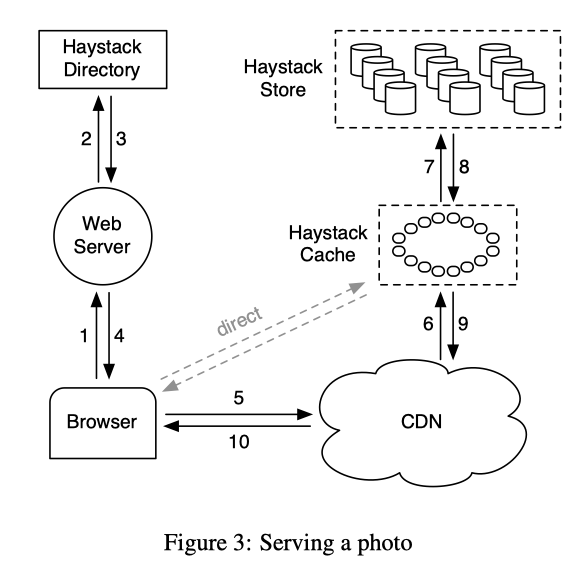
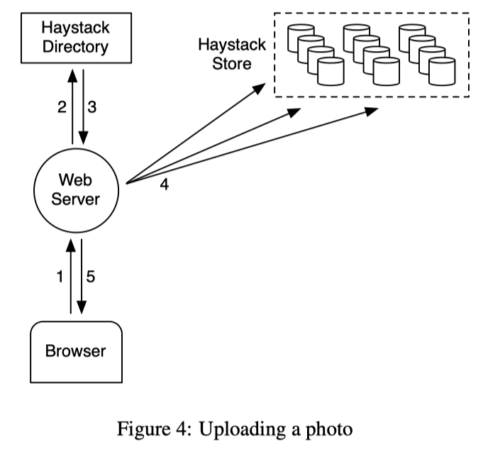
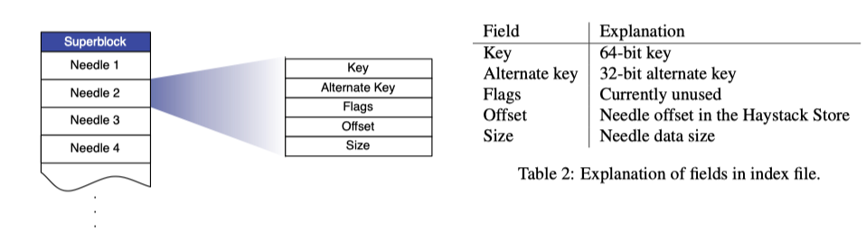

-
Haystack
is an object storage system optimized for facebook's photo application, where data is written once, read often, never modified, and rarely
deleted
-
Features
-
less
expensive and higher performing solution than previous attempts (leveraged NAS appliances over NFS
=> incurs an excessive number of disk operations because of metadata lookups)
-
Haystack
perform all metadata lookup in main memory
-
Motivations
-
For
each uploaded photo, facebook generates and stores 4 images of different sizes
-
photo
storage poses a significant challenge for facebook's infrastructure
-
Traditional
POSIX based filesystems not work because
-
they
are directories and per file metadata
-
for
photo application, most of this metadata, e.g. permissions, is unused and thereby wasted storage
capacity
-
more
significant cost is that we have to read the file's metadata from disk into memory in order to
find the file itself
-
this
becomes the bottleneck when we amplified with over billions of photos and petabytes of data
-
disk
operations:
-
one
or more to translate the filename to an inode number
-
another
to read the inode from disk
-
final
one to read the file itself
-
conclusion:
using disk IOs for metadata was the
limiting factor for facebook's read throughput
-
additional
cost is the CDNs to serve the majority of read traffic
-
Design
goals
-
high
throughput and low latency
-
by
requiring at most one disk operation per read
-
by
keeping all metadata in main memory
-
make
practical by dramatically reducing the
per photo metadata that is necessary to find a photo on disk
-
fault-tolerant
-
admit
that failure is the norm
-
it
may happen that an entire data center crash but haystack should still provide availability to
users transparently
-
by
replicating each photo in geographically
distinct locations. We will introduce another machine to take the crashed
machine, copying data for redundancy as necessary
-
cost-effective
-
quantify
savings along two dimensions
-
cost
per terabyte of usable storage [~28% less]
-
read
rate normalized for each terabyte of usable storage [~4x more reads per seconds]
-
simple
-
should
be straight-forward to implement and to maintain
-
Design and Implementation
-
Facebook
uses a CDN to serve popular images
and leverages Haystack to respond to photo requests in the long tail efficiently
-
the
CDN should have to cache an unreasonably large amount of the static content in order for traditional
storage approaches not to be IO bound
-
it's
acceptable that requests for
less popular photos may require disk
operations, but we aim to limit the number of such operations to only the ones necessary for reading
actual photo data
-
by
reduce the memory used for filesystem metadata, thereby making it practical to keep all this
metadata in main memory
-
Haystack
stores multiple photos in a single file and therefore maintains very large files
-
simplicity
is its strength, and it is indeed effective
-
Two
kinds of metadata
-
application metadata that describes the info
needed to construct a URL that a browser can use to retrieve a photo
-
filesystem metadata that identifies the data
necessary for a host to retrieve the photos that reside on that host's disk
-
Three
core components
-
Haystack store
-
encapsulates
the persistent storage system for photos and is the only component that manages the filesystem
metadata for photos
-
store
capacity is organized by physical
volumes, and physical volumes on different machines are grouped into logical volumes
-
each
Store machine manages multiple physical volumes and each volume holds millions of photos
[think a physical volume as a large
file saved as '/hay/haystack ' consisting of a superblock followed by a sequence of
needles]
-
the
Store machine access a photo quickly by using only the id of the corresponding logical
volume and the file offset at which the photo resides (recall that we combine photos into
a single large file)
-
each
needle represents a photo stored in Haystack
-
it
maintains an in-memory data
structure for each of
its volumes to retrieve needles quickly. that data structure maps pairs of
(key, alternate key) to the corresponding needle's flags, size in bytes, and volume offset
-
key:
retriving the filename, offset, and size for a particular photo without needing disk operations
-
when
Haystack stores a photo on a logical volume, the photo is written to all corresponding
physical volumes [achiving
fault tolerance]
-
newly
added machines to the Store are write-enabled, only write-enabled machines receive uploads
-
when
a machine exhausts its capacity, we mark it as read-only
-
Haystack directory
-
maintains
the logical to physical mapping along with other application metadata e.g. logical volume where each
photo resides and the logical volume's free space
-
web
servers will use this info to construct the image URL in response to user's request
-
load
balances writes across logical volumes and reads across physical volumes
-
determines
whether a photo request should be handled by the CDN or by the Haystack Cache
-
identifies
those logical volumes that are
read-only, either because of operational reasons or because those volumes have
reached their storage capacity. volumes are marked as read-only at the granularity of machines for operational
ease
-
in
the event that we lose the data on a Store machine, we remove the corresponding entry in
the mapping and replace it with a new Store machine that is brought online
-
Haystack cache (essentially a internal CDN)
-
function
as our internal CDN which shelters the Haystack store from requests for the most popular
photos and provides insulation if upstream CDN nodes fail and need to refetch content
-
reduce
our dependence on external CDNs
-
Cache
is organized as a distributed hash table
-
we
use a photo's id as the key to locate cached data
-
if
the Cache cannot immediately respond to the request, then the Cache fetches the photo from the
Store machine (identified through the URL), and replies to the requester (either the CDN or
the user's browser) as appropriate
-
it
caches a photo only if
-
a.
the request comes directly from a user and not the CDN
-
previous
attempts showed that post-CDN caching is ineffective as it is unlikely that a request
that misses in the CDN would hit in our internal cache
-
b.
the photo is fetched from a write-enabled Store machine
-
we
use the Cache to shelter the
write-enabled Sotre machines from reads because
-
photos
are most heavily accessed soon after they are uploaded
-
filesystems
for our workload generally perform better when doing either reads or writes but not both...
-
How
the Store, Directory, and Cache components fit into the canonical interaction
-
the
browser can be directed to either the CDN or the cache

-
when
a user visits a page, the web server uses the Haystack directory to construct the URL for that
photo
-
the
browser can be directed to either the CDN or the cache
-
a
typical URL that provides such direction looks like:
-
http://〈CDN〉/〈Cache〉/〈Machine
id〉/〈Logical volume, Photo〉
-
the
1st part of the URL specifies from which CDN to request the photo
-
the
CDN can then loopup the photo internally using only the last part of the URL (i.e. using the
logical volume and the photo id)
-
if
the CDN cannot locate the photo, it then stripes the CDN address from the URL and contacts the
Haystack Cache
-
the
Cache does a similar lookup to find the photo. if still miss, the Cache strips the cache address
from the URL and requests the photo from the specified Haystack Store machine
-
photo
requests that go directly to the Cache have a similar workflow except that the URL is missing the
CDN-specific infos since we skipped that step in such cases
-
How
to upload a photo
-
interactions
when a user uploads a photo

-
the
user sends the image data to a web server
-
the
server requests a write-enabled logical volume from the Haystack Directory
-
then
the web server assigns a unique id to the photo and uploads it to each of the physical volumes
mapped to the assigned logical volume
-
Index file
-
motivation
-
though
in theory a machine can reconstruct its in-memory mappings by reading all of its physical
volumes, doing so is time-consuming as the amount of data has to all be read from disk
-
index
files allow a Store machine to build its in-memory mappings quickly, shortening restart
time
-
the
index file is a checkpoint of the in-memory data structure used to locate needles efficiently
on disk
-
Store
machines maintain an index file for each of their volumes
-
index
file's layout is similar to a volume file's, containing a superblock followed a sequence of index records
corresponding to each needle in the superblock (?)
-
layout
of Haystack index file

-
index
files are updated asynchronously, which means index files may represent stale
checkpoints
-
To
allow write and delete operations to return faster...
-
when
we write a new photo, the Store machine synchronously appends a needle to the end of the volume
file and asynchronously
appends a record to the index file
-
when
we delete a photo, the Store machine synchronously sets the flag in the photo's needle
without updating the index
file
-
=>
a Store machine may retrieve a photo that has in fact been deleted. therefore, after a
Store machine reads the entire needle for a photo, that machine can then inspect the
deleted flag. If a needle is marked as deleted, then the Store machine updates its
in-memory mapping accordingly and notifies the Cache that the object was not
found
-
both
avoid additional synchronous disk writes
-
Side
effects
-
needles
can exist without corresponding index records [orphans]
-
index
records do not reflect deleted photos
-
During
restarts
-
a
Store machine sequentially examines each orphan, creates a matching index record, and appens
that record to the index file
-
the
orphan localization can be done quickly because the last record in the index file corresponds
to the last non-orphan needle in the volume file
-
to
complete the restarts, the Store machine now initializes its in-memory mappings using only the
index files
-
Underlying
filesystem used in the Store machine
-
Motivation
-
should
not need much memory to be able to perform random seeks within a large file quickly
-
each
Store machine usese XFS, which
is an extent based filesystem
-
Advantages
-
the
blockmaps for several contiguous large files can be small enough to be sotred in main
memory
-
XFS
provides efficient file preallocation, mitigating fragmentation and reining in how large
block maps can grow
-
Haystack
can then eliminate disk operations for retrieving filesystem metadata when reading a
photo
-
this
does not imply that Haystack can guarantee every photo read will incur exactly one disk
operation
-
corner cases exist where the
filesystem requires more than one disk operation when photo data crosses extents or RAID
boundaries
-
Haystack
preallocates 1 Gigabyte extents and uses 256 kilobyte RAID stripe sizes so that in practice we
encounter these cases rarely
-
Failure
recovery
-
Motivation
-
failures
are the norm in large scale systems running on commodity hardware
-
failures
can be:
-
faulty
hard drives
-
misbehaving
RAID controllers
-
bad
motherboards
-
...
-
Two dimensions
-
failure detection
-
Haystack
maintains a background task, dubbed "pitchfork"
-
periodically
checks the health of each Store machine
-
remotely
tests the connection to that machine
-
checks
the availability of each volume file
-
attempts
to read data from the Store machine
-
If
pitchfork determines that a Store machine consistently fails these health checks, then
pitchfork automatically marks all
logical volumes that reside on that Store machine as read-only
-
operators
manually address the
underlying cause for the failed checks offline
-
failure recovery
-
occasionally,
the situation requires a more heavy-handed bulk
sync operation in which we reset the data of a Store machine using the volume
files supplied by a replica
-
bulk
sync happens rarely and is simple albeit slow to carry out (large amount of data that
exceeds the speed of the NIC on each Store machine), resulting in hours for mean time to recovery
-
Optimizations
-
a.
Compaction
-
an
online operation that reclaims the space used by deleted and duplicate needles (i.e. needles
with the same key and alternate key)
-
a
Store machine compacts a
volume file by copying needles into a new file while skipping any duplicate or deleted entries
-
during
compaction, deletes go to both files
-
once
this procedure reaches the end of the file, it blocks any further modifications to the volume
and atomically swaps the files and in-memory structures
-
b.
Saving more memory
-
since
we only use the flag field to mark a needle as deleted, we don't need to maintain a separate
fields for the falgs, but rather we reuse the offset field. A photo is marked as deleted by
setting the offset to be 0
-
Store
machines do not keep track of cookie values in main memory, but instead check the supplied
cookie after reading a needle from disk
-
Currently
uses 10 bytes of main memory per photo on average
-
Since
we scale each uploaded image to 4 photo sizes
-
they
have the same key (64 bits)
-
different
alternate keys (32 bits)
-
and
consequently different data sizes (16 bits)
-
additional
2 bytes per image in overheads due to hash tables
-
=>
the total for 4 scaled photos of the same image is 40 bytes
-
c.
Batch upload
-
motivation:
-
disks
are generally better at performing large sequential writes instead of small random writes
-
many
users upload entire albums fo facebook instead of single pics, providing an obvious
opportunity to batch the photos in an album together